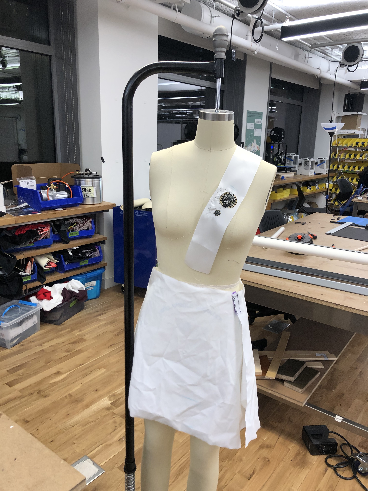
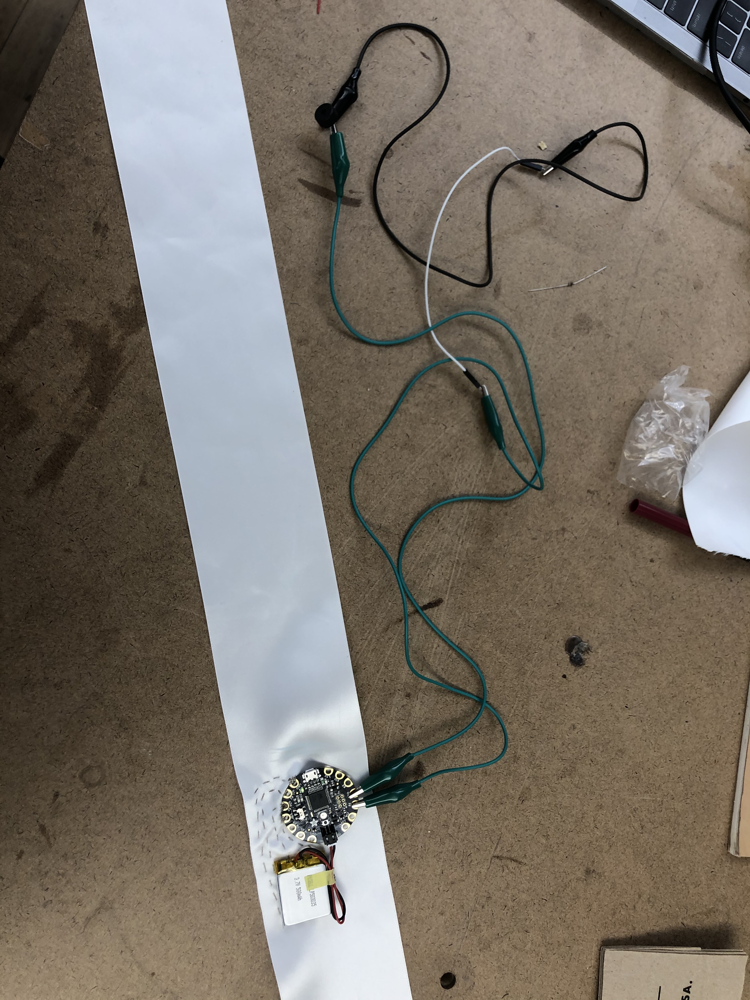
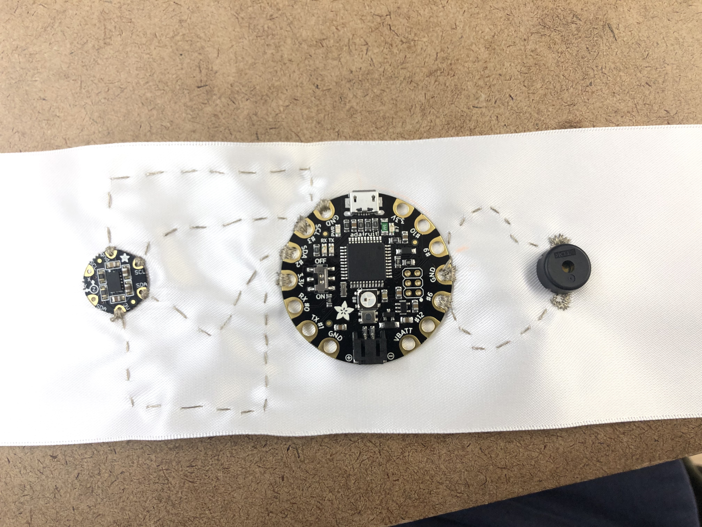
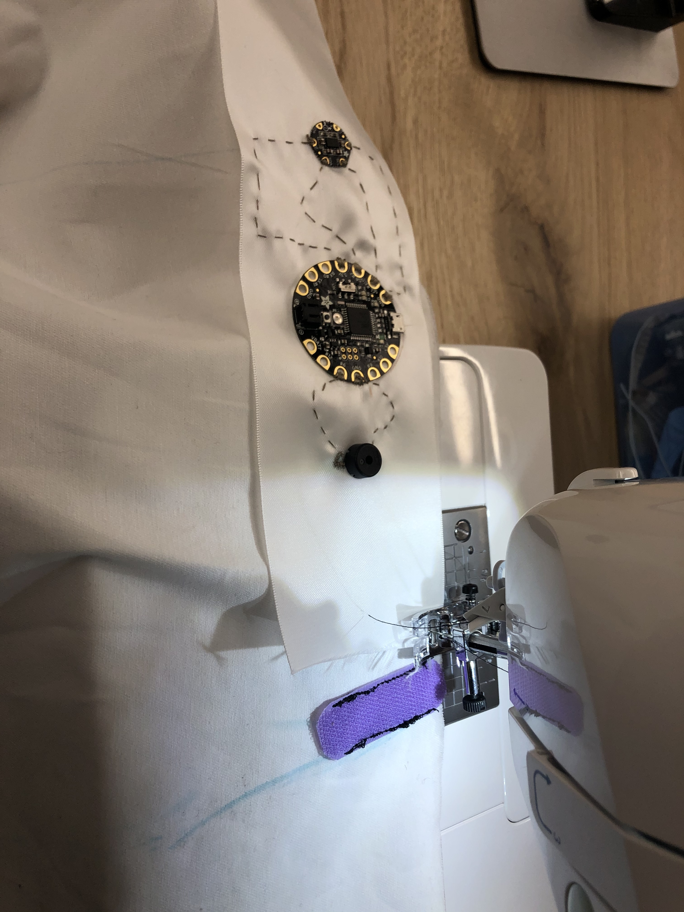
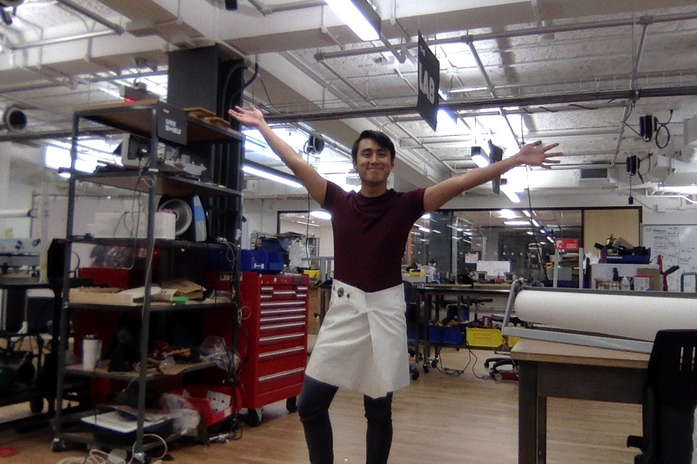

Intro to Wearables: A Spring 2020 Blog
Leonard Santos
Senses: Week 3 - 4
Assignment
Due: February 25, 2020 -
Creating a new sense through wearables.
Brainstorming
For this project, I wanted to challenge myself to make a new sense by combining two senses that are often ignored in our visual-centered technology: sound and movement. Specifically, I was inspired by the teen drama classic of the contemporary age. Of course, I'm talking about Riverdale.

Riverdale, for those of you who don't know, is an American teen drama series on the CW that's been showcasing a special blend of absurdity, teen drama, and murder since 2017. While I won't make any claims about the quality or realism of this program, I will say that it has one of the funniest implementation of sound effects in television. In one of the musical episodes of the show based on the musical "Heathers" (which is based on the movie "Heathers"), Riverdale's editors added this remarkably loud "swoosh" noise whenever a character moved.
For an example, feel free to watch the video below:
For this project, I want to create a skirt that makes a noise that emits whenever the user makes an appropriate amount of movement so that we can all channel our in Cheryl Blossom.
Process
Materials
Day 1
First, I got my cloth and measured it before I cut it up so it would properly wrap around my waist to make the skirt. Once I was done with that, I cut up the cloth to what became the base of the skirt and prepare to put on the velcro so that I could fasten it together.
Next, I figured out where I wanted to put the velcro on the skirt (on the edges) so that the skirt would fit.
I used the sewing machine (after properly ironing out the fabric first) to sew some pieces of velcro onto the fabric. I didn't want to use too much, so I cut the velcro into a smaller piece to it was easier to handle. After I was done, I used clear nail polish to finish the sides of the fabric so that it wouldn't fray.
For my last act of the day, I wanted to implement the Adafruit Flora and accelerometer. I sewed both of them together onto a white sash (that I'll later sew onto the main skirt) and coded in a program to read when the accelerometer's coordinates using one of Ardruino's library examples.
I ended the day with a removable skirt and a program that could sense the acceleration needed for an output!
With that done, I left to get some much needed sleep with the goal of putting it all together later.
Day 2
The next day, I set up all of my materials to get ready to finish this skirt.
My next goal was to put the speaker into the program, although I had to test it first to make sure that the speaker that I purchased actually worked.
With help from many, MANY people (shoutout to Jingwen, Kat, the people at the Shop, and the miscellaneous random people I bothered) I was able to make a program that could make it work.
I then combined it with the accelerometer program in order to get accelerometer readings along with the buzzing.
Next, I coded the program so that the buzzer would begin working if the accelerometer is shaking and stop if the accelerometer stopped moving. I had to remove the stitches from yesterday's accelerometer as some of the thread started coming undone, but I was able to test it with alligator clips.
I sewed everything together, making sure to continually test the program to make sure that it all worked.
I ended up with this!
Now that it was all sewed together, I tested the program one last time to make sure that it worked. Thankfully, it did!
To finish it up, I sewed it all together with the sewing machine to finally finish the skirt!
Presentation
This is how my final product looks!
